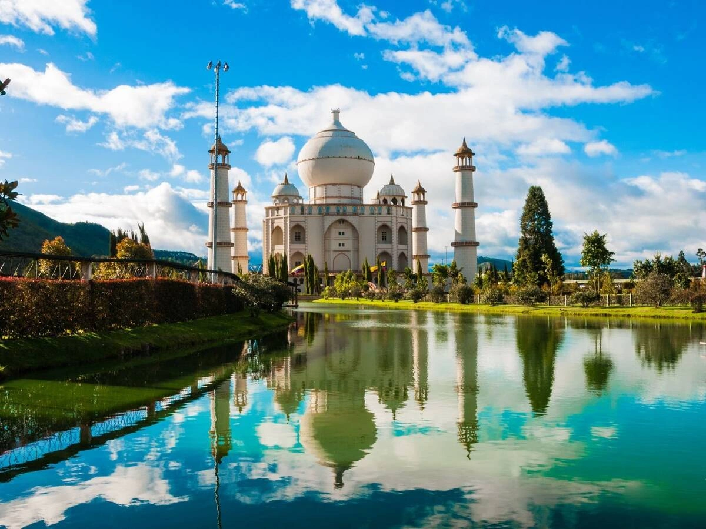
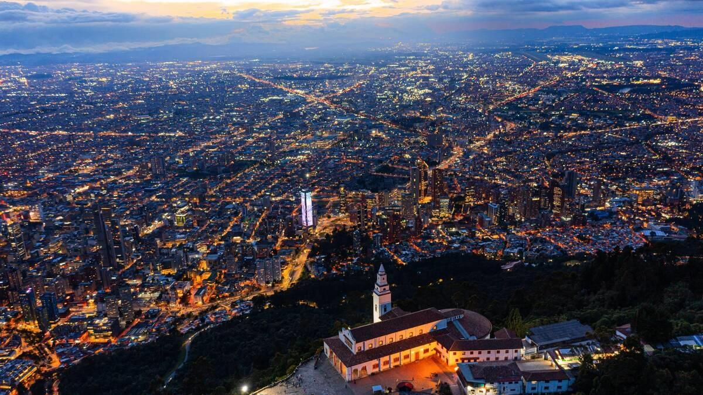
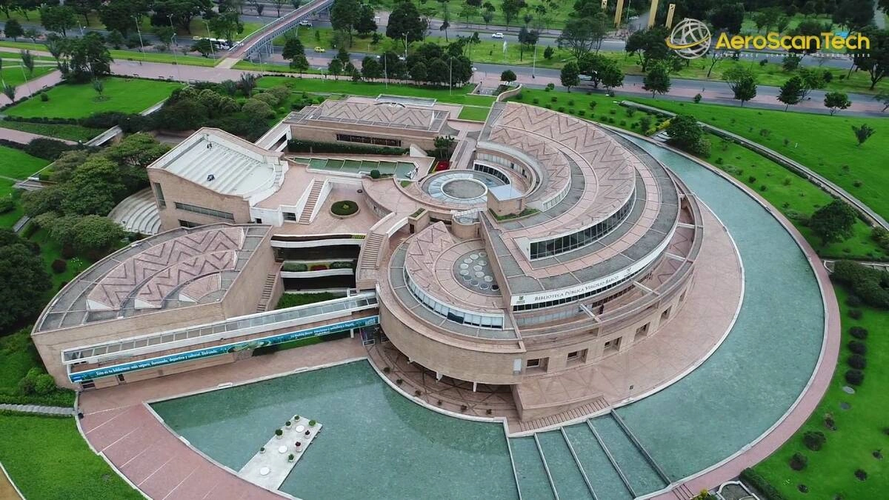
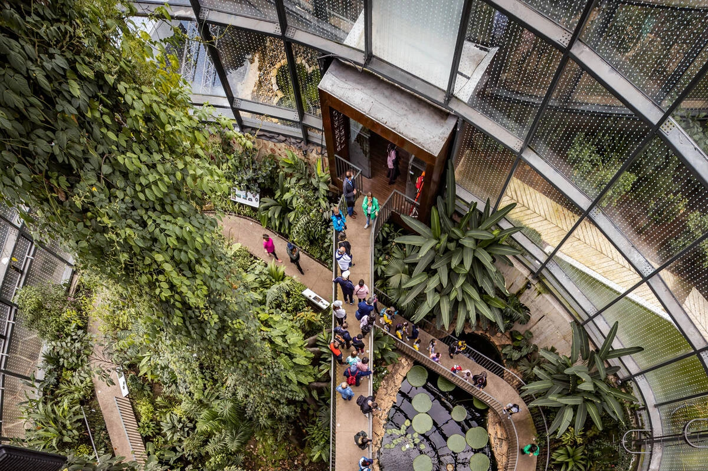
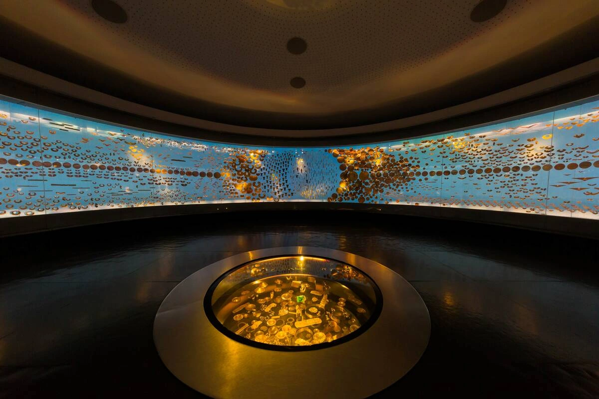
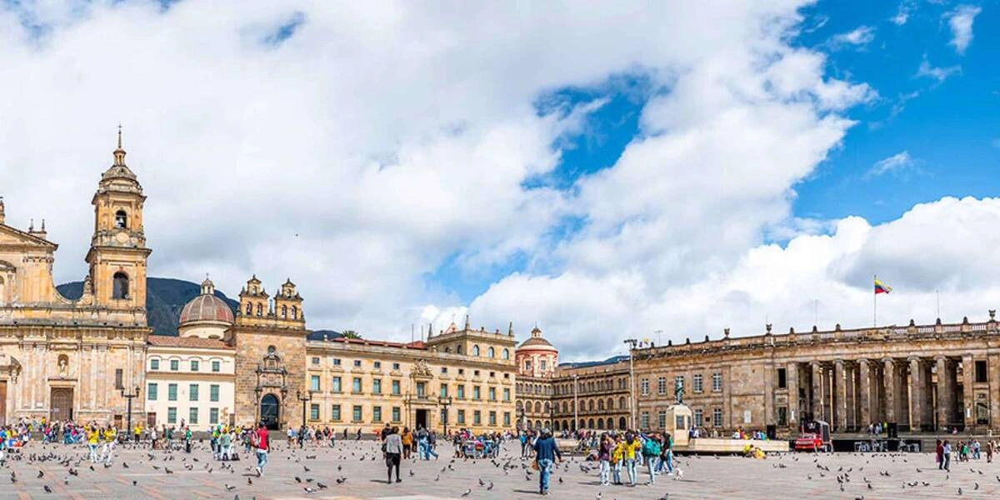

Jaime Duque Park is a large theme park with attractions like
replicas of world landmarks, a zoo, a botanical garden, a museum, and a dinosaur sculpture. It
offers amusement rides making it a popular family destination.

Monserrate is a prominent mountain in Bogotá, Colombia, offering stunning views of the
city. Accessible by cable car, funicular, or hiking, it features a church at the summit, a
popular pilgrimage site. Monserrate is a major tourist attraction, known for its scenic beauty,
cultural significance, and panoramic views.

The Virgilio Barco Library is a modern architectural landmark
featuring a vast collection of books, digital resources, and cultural spaces. Surrounded by a
beautiful park, it offers a peaceful environment for reading, learning, and community events. It
is named after former Colombian president.

The Bogotá Botanical Garden is a large green space in the city, showcasing a diverse
collection of Colombian flora. It features themed gardens, including tropical, aquatic, and
orchid sections, along with educational exhibits and walking trails.

The Museo del Oro in Bogotá is a renowned museum that houses an extensive collection of
pre-Columbian gold artifacts and other indigenous treasures. It offers insights
into the rich cultural history showcasing pieces of art and metallurgy.

Simón Bolívar Square in Bogotá is a historic and central public space surrounded by
important government buildings. It serves as a venue for political events, protests, and
cultural activities. The square is named after the independence hero Simón Bolívar and is a key
landmark in the heart of the city.